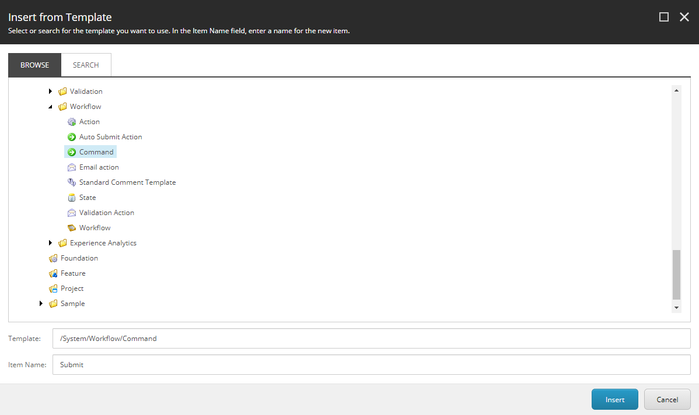
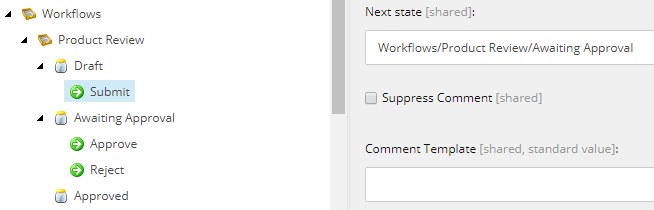
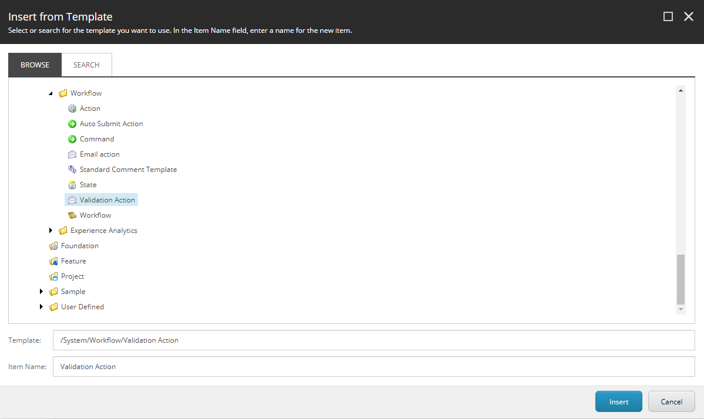
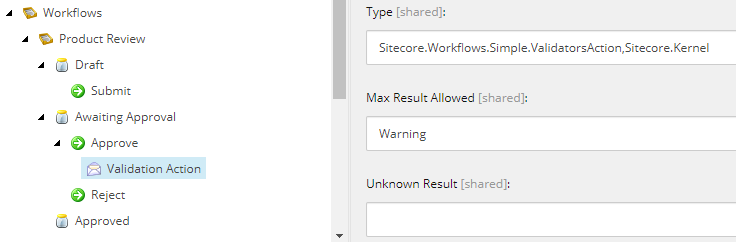
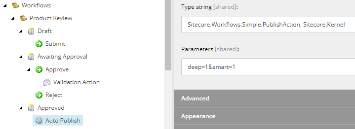
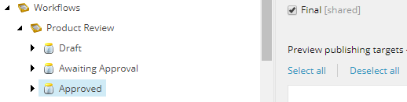

Add commands and actions to states
How to add actions and commands to states as well as actions to commands, and how to define the final state.
You can add actions and commands to states, and you can also add actions to commands.
Add a command to a state
To add a command to a state:
Click the Product Review workflow.
Right-click the Draft state, then click Insert, Command and name the new command Submit.
 Click the Submit command, and select Awaiting Approval in the Next state field.

Now, create the following commands under the Awaiting Approval state by repeating step 1-3.
Approve with Next state set to Approved.
Reject with Next state set to Draft.
Add an action to a state or command
To add an action to a state or command:
Click the Product Review workflow, the Awaiting Approval state.
Right-click the Approve command, then click Insert, Action, and name the new command Validation Action.
 Click the Validation Action action and enter
Sitecore.Workflows.Simple.ValidatorsAction, Sitecore.Kernelin the Type field. EnterWarningin the Max Result Allowed field. Fill out the Result fields with the messages you want a user to see in case of validation errors, such as “You cannot approve an item with validation errors”.
In a similar way, add an action named Auto Publish to the Approved state but enter Sitecore.Workflows.Simple.PublishAction, Sitecore.Kernel in the Type field and deep=1&smart=1 in the Parameters field.
|  |
Define the final state
To define the final state, click the state you want to be the final state in your workflow and select the Final checkbox.
|  |
In this example, you can only publish items that are in the Approved state.